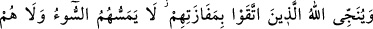
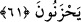
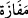
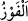

olduğunu görürsün. Kibirlenenlerin kalacağı yer cehennemde değil midir?
“Kıyamet gününde” Allah’ı şânına lâyık olmayan evlâd, eş ve ortak edinme gibi bir
takım sıfatlarla tavsîf ederek “Allah hakkında yalan söyleyenlerin yüzlerinin kapkara
olduğunu görürsün.” Buradaki ‘görme’nin gözle görme ya da tanıma mânâsına olması
mümkündür. Mânâ şöyledir: Onları çektikleri sıkıntıdan ya da içinde bulundukları
cehâlet karanlığından dolayı yüzleri simsiyah bir halde görürsün. Cehennemliklerin
yüzü, oraya girmezden evvel simsiyah kesilecek ve bu onların cehennemlik olduğunun
bir göstergesi olacak. Nitekim âyette “(O gün) mücrimler sîmâlarından tanınır!” (er-
Rahmân, 55/41) buyrulmuştur.
Hasan Basrî’ye bu âyet sorulunca şöyle dedi: “Onlar “Herşey bize âiddir; dilersek
yaparız, dilersek yapmayız!” diyenlerdir.”
et-Te’vîlâtü’n-Necmiyye’de der ki: “Kıyâmet günü yüzlerin kalplerin rengini
alacağına işâret etmektedir. Yalancı kalpler yalanın siyahlık ve karanlığıyla kapkara
kesilmiş olduğu için bu kalplerin sâhiplerinin yüzleri de kalbin rengini alacaktır.”
Yûsuf b. Hüseyn (r.h.) der ki: “Kıyamet günü en şiddetli azaba uğrayacak olanlar,
Allah hakkında O’na âid olmayan şeyleri iddiâ edenler ile sâhip olmadıkları birtakım
hallere sâhipmiş gibi gösterenlerdir.”
Îman ve itâat etmekten “Kibirlenenlerin kalacağı yer cehennemde değil midir?”
Onlar için cehennemde yer mi yok? Elbette ki var!
et-Te’vîlâtü’n-Necmiyye’de der ki: “Bunlar Allah’ın dostlarından nasihat ve öğüt
kabul etmekten imtina edip onlara büyüklük taslayanlardır.”
61. Allah, takvâ sâhiplerini esenliğe kavuşturup kurtuluşa erdirir. Onlara hiçbir
fenalık dokunmaz. Onlar mahzun da olmazlar.
“Allah, takvâ sâhiplerini” şirkten ve mâsiyetten sakınanları “esenliğe kavuşturup
kurtuluşa erdirir.” Yâni cehennemden kurtarır.
“__WORD__ mimli masdar olup başarı demektir. İstediği bir şeyi elde etmek demektir.
Râğıb der ki: “__WORD__ esenlikle birlikte başarı kazanmak anlamındadır. “Bâ” harfi,
mevsûlden hâl olan mahzûf bir kelimeye müteallıktır. Onların azabdan kurtarılmalarının
sevâba nâiliyyet için olduğunu ifâde eder. Yâni Allah onları istedikleri yer olan cenneti
elde etmiş olarak büyüklük taslayanların gireceği yerden kurtarır.
“Onlara hiçbir fenalık” istemedikleri bir şey, kötü hal ve azab “dokunmaz. Onlar
mahzun da olmazlar.” Bu cümle mevsulden diğer bir hal olup onların kurtuluşlarının
veya cenneti elde etmelerinin öncesinde kendilerine azab ve üzüntü dokunmadığını